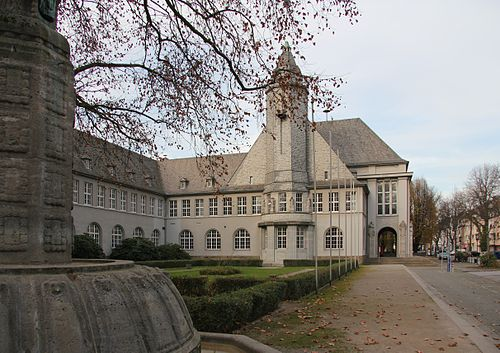

Дата та місце народження: 14.04.2006, вул. Антоновича 17А, м. Київ, Україна.
Освіта: навчалась 11 років у спеціалізованій школі №17 м. Київ (нині ліцей №17 "Кирилівський"). Останнє півріччя 11 класу закінчила у дистанційній школі "Оптіма" (по особистим обставинам). Зараз навчаюсь у КПІ ім. Ігоря Сікорського, спеціальність "Інженерія програмного забезпечення".
Мені дуже сподобалось місто Шверте, яке розташоване в землі Північний Рейн-Вестфалія, неподалік Дортмунда (Німеччина). Це тихе та затишне містечко, де переважно живуть люди похилого віку, тому атмосфера там дуже спокійна, без гучних вечірок. Особливо вражає природа – зелені парки, вузькі вулички, затишні будиночки. Центральна площа з ратушею виглядає дуже автентично, а біля річки Рур відкривається чудовий краєвид, де можна спокійно прогулятися або посидіти на лавочці. Я мала нагоду побувати там разом з хлопцем у друзів – це залишило теплі спогади та бажання повернутися знову.
Місто Шверте має довгу історію, яка сягає середньовіччя. Перша письмова згадка про поселення датується XII століттям. Протягом століть Шверте розвивалося як невелике торгове містечко на перехресті важливих шляхів, а також як ремісничий центр. У XIX столітті тут почався індустріальний розвиток, але місто зберегло свій затишний характер завдяки зеленим районам і невисоким будинкам. Сьогодні Шверте поєднує сучасну інфраструктуру з багатою історичною спадщиною, зберігаючи атмосферу спокою та гармонії.
